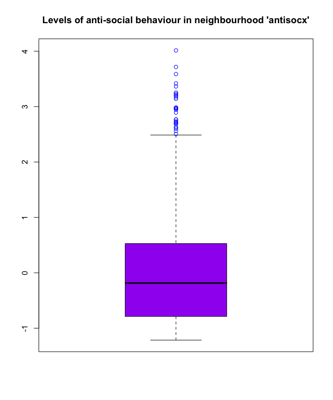
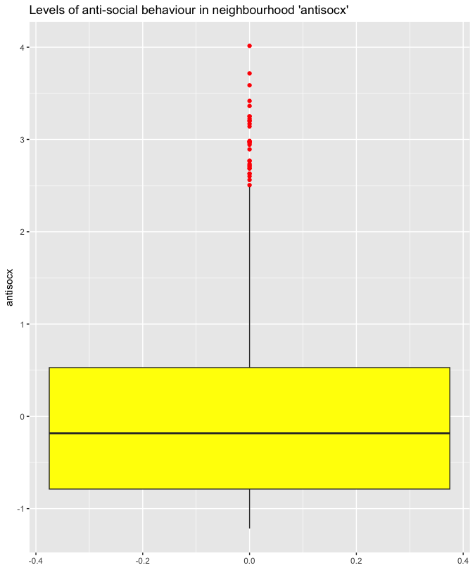
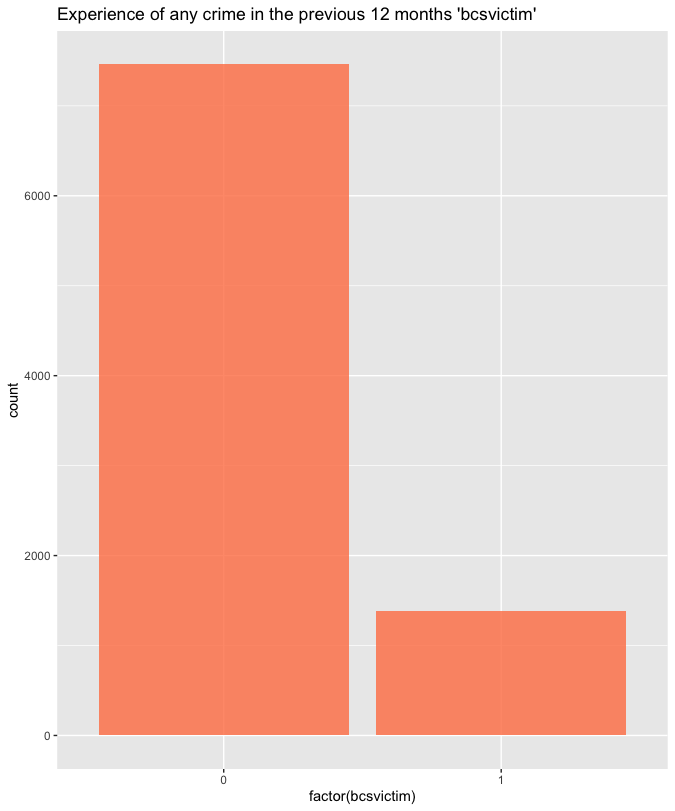

Unit 5
DATA ACTIVITY UNIT 5
Crime Survey for England and Wales, 2013-2014: Unrestricted Access Teaching Dataset
- Create a boxplot for the variable 'antisocx'.
- Create a bar plot using either the barplot() function or the ggplot() function to assess whether or not the survey respondents experienced crime in the 12 months prior to the survey (use the variable 'bcsvictim'). Give the graph a suitable title and choose a colour for the bars (e.g., orange).
Whilst I already had created a boxplot for the 'antisocx' variable in Unit 1, this task has slightly different requirements in terms of graphics.
See results below in both boxplot() - from graphics() - and ggplot().
boxplot() 'antisocx' boxplot
> boxplot(ds[['antisocx']], main = "Levels of anti-social behaviour in neighbourhood 'antisocx'", col = "purple", outcol = "blue")
ggplot() 'antisocx' boxplot
ds %>%
# set 'antisocx' for x
ggplot(aes(antisocx))+
# draw boxplot
geom_boxplot(fill = "yellow", outlier.colour = "red")+
# flip vertically
coord_flip()+
# add title
labs(title = "Levels of anti-social behaviour in neighbourhood 'antisocx'")
ggplot() 'bcsvictim' boxplot
# set variable to factor format otherwise R treats the variables as numeric
ggplot(ds, aes(factor(bcsvictim))) +
# plot barchart and set colour density to 0.8
geom_bar(fill = "coral", alpha = 0.8)+
# set title
labs(title = "Experience of any crime in the previous 12 months 'bcsvictim'")
